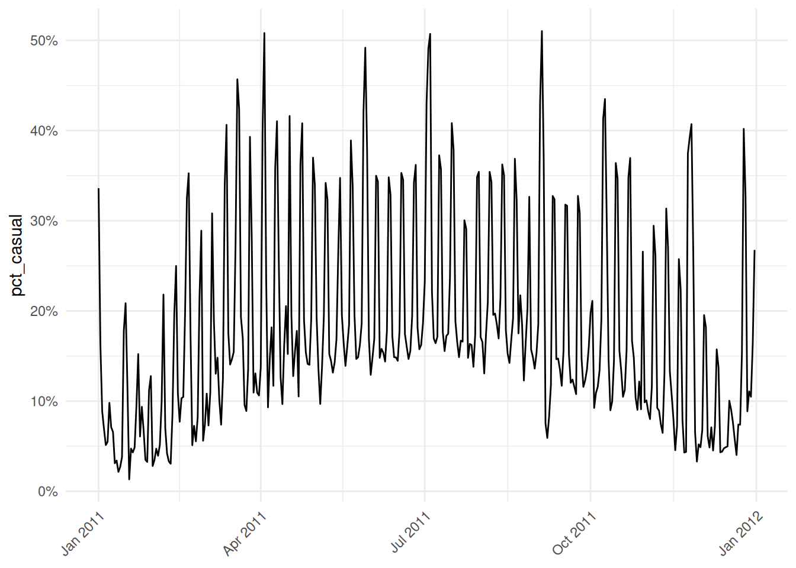

library(titanic)
library(tidyverse)
library(moderndive)
library(lubridate)
library(patchwork)
library(ISLR2)
library(openintro)Appendix B — Exercise solutions
B.1 Chapter 1
Exercise 1.1 b. Quarto Document
Exercise 1.2 a. error
Exercise 1.3 a. TRUE
Exercise 1.4 a. TRUE
Exercise 1.5 b. FALSE
Exercise 1.6 e. 15
Exercise 1.7 b. Data on a flight
Exercise 1.8 c. quantitative
z <- 12*31
add_on <- 12
z + add_on[1] 384glimpse(titanic_train)The dataset has 891 rows (passengers) and 12 variables. The variables identify various passenger information such as name, age, sex, ticket class, number of siblings/spouses on board, fare cost, port the left from, and whether or not they survived.
head(titanic_train) PassengerId Survived Pclass
1 1 0 3
2 2 1 1
3 3 1 3
4 4 1 1
5 5 0 3
6 6 0 3
Name Sex Age SibSp Parch
1 Braund, Mr. Owen Harris male 22 1 0
2 Cumings, Mrs. John Bradley (Florence Briggs Thayer) female 38 1 0
3 Heikkinen, Miss. Laina female 26 0 0
4 Futrelle, Mrs. Jacques Heath (Lily May Peel) female 35 1 0
5 Allen, Mr. William Henry male 35 0 0
6 Moran, Mr. James male NA 0 0
Ticket Fare Cabin Embarked
1 A/5 21171 7.2500 S
2 PC 17599 71.2833 C85 C
3 STON/O2. 3101282 7.9250 S
4 113803 53.1000 C123 S
5 373450 8.0500 S
6 330877 8.4583 QThe head() function shows the first 6 rows of the dataset. Based on this, I expect the tail() function to show the last 6 rows of the dataset.
unique(titanic_train$Embarked)[1] "S" "C" "Q" "" There are 3 unique ports of embarkation: Q, S, C (Queenstown, Southampton, Cherbourg).
B.2 Chapter 2
Exercise 2.1 b. geom_line(), c. geom_col(), e. geom_histogram()
Exercise 2.2 d. geom_point()
Exercise 2.3 b. changing the transparency, e. jittering the points
Exercise 2.4 b. When you want to split a particular visualization of variables by another variable
Exercise 2.5 b. geom_col()
Exercise 2.6 a. grouped boxplot
Exercise 2.7 b. linegraph
Exercise 2.8 c. scatterplot
Exercise 2.9 d. boxplot
Exercise 2.10 There is a strong positive non-linear (exponential) relationship. We can see by the blue line (line of best fit) that the data does not match a linear line. This tells us that as someone spends more time in the grocery store, they also spend more money.
Exercise 2.11 The histogram is unimodal and left skewed.
ggplot(
Bikeshare,
aes(x = bikers, y = atemp)
) +
geom_point(alpha = 0.2)
There is a moderate positive linear relationship between the number of bikers each hour and temperature. Meaning as temperature increases so does the number of bikers.
ggplot(Bikeshare, aes(x = bikers) ) +
geom_histogram(color = "white", bins = 35) +
facet_wrap(~ weathersit, scales = "free")
There was only one observation with heavy rain/snow. The distribution of bikers for all other weather conditions are right skewed. The main peak for each weather condition is similar at around 20. The “clear” and “light rain/snow” conditions are fairly unimodal and “cloudy/misty” appears bi-modal with a minor peak around 80. The spread in terms of range is 600 for all three conditions.
ggplot(Bikeshare, aes(x = factor(season), y = bikers)) +
geom_boxplot()Season 1 corresponds to winter and has the lowest median around 60 bikers and lowest spread in terms of IQR estimated around 80. Season 3 corresponds to summer with the highest median estimated around 175 bikers and largest spread in terms of IQR estimated around 225. The distribution for spring and fall are similar with a median around 125 and IQR of around 200. All seasons have high outliers resulting in a right skew.
ggplot(titanic_train,
aes(x = factor(Survived), fill = Sex)
) +
geom_bar(position = "dodge")
There were more males than females in our sample of data from the titanic. Roughly 240 female passengers and 105 male passengers survived while around 80 female passengers and 460 male passengers died. Meaning in total more passengers died (~540) than survived(~345). Due to the imbalanced counts between genders it would be more informative to compare the rate of survival.
ggplot(titanic_train,
aes(x = factor(Survived), fill = Sex)
) +
geom_bar(position = "fill")
Of the passengers that survived, roughly 30% were male and 70% female. Of the passengers that died, roughly 80% were male and 20% female.
ggplot(
bike_daily,
aes(x = date, y = bikers)
) +
geom_line() +
geom_line(aes(y = registered), color = "blue") +
geom_line(aes(y = casual), color = "red")
There are more registered bikers than casual bikers and the registered and casual bikers sum to the total bikers (black line). In general, the line trends upwards from January until July where the number of bikers peak and trends downward the rest of the year. This makes sense because people generally bike when the weather is nicer in the summer months. Although August is a summer month it has a lower number of bikers than July likely due to the school year starting back up.
ggplot(
bike_daily,
aes(x = date, y = pct_casual)
) +
geom_line() +
theme_minimal() +
labs(x = NULL) +
theme(axis.text.x = element_text(angle = 45,
hjust = 1)) +
scale_y_continuous(labels = scales::percent)
B.3 Chapter 3
Exercise 3.1 c. x %>% c() %>% b() %>% a()
Exercise 3.2 d. arrange() , g. filter() , c. mutate()
Exercise 3.3 a. 12 row and 5 columns
Exercise 3.4 b. To make exploring a data frame easier by only outputting the variables of interest
Exercise 3.5 a. increase
Exercise 3.6 c. median and interquartile range; mean and standard deviation
Exercise 3.7 b. \(mean < median\)
Exercise 3.8 a. These key variables uniquely identify the observational units
Exercise 3.9 d.
Exercise 3.11 a. e. (there is no variable called passenger)
Bikeshare %>%
filter(hr == 12) %>%
group_by(mnth) %>%
summarize(avg_bikers= mean(bikers, na.rm=TRUE))# A tibble: 12 × 2
mnth avg_bikers
<fct> <dbl>
1 Jan 72.6
2 Feb 99.6
3 March 120.
4 April 177.
5 May 250.
6 June 248.
7 July 238
8 Aug 231.
9 Sept 228.
10 Oct 233.
11 Nov 206.
12 Dec 168. Auto %>%
mutate(pwr = horsepower/weight ) %>%
slice_max(pwr) %>%
select(name, pwr, horsepower, weight) name pwr horsepower weight
1 buick estate wagon (sw) 0.07290992 225 3086The buick estate wagon (sw) has the largest power weight ratio of 0.0729.
titanic_train %>%
group_by(Pclass) %>%
summarize(fare_calc= sum(Fare, na.rm=TRUE)) %>%
arrange(desc(fare_calc))# A tibble: 3 × 2
Pclass fare_calc
<int> <dbl>
1 1 18177.
2 3 6715.
3 2 3802.titanic_train %>%
count(Survived, Sex) Survived Sex n
1 0 female 81
2 0 male 468
3 1 female 233
4 1 male 109# Alternate code
titanic_train %>%
group_by(Survived, Sex) %>%
summarize(count = n())`summarise()` has grouped output by 'Survived'. You can override using the
`.groups` argument.# A tibble: 4 × 3
# Groups: Survived [2]
Survived Sex count
<int> <chr> <int>
1 0 female 81
2 0 male 468
3 1 female 233
4 1 male 109bike_summer <- Bikeshare %>%
filter(mnth %in% c("June", "July", "Aug"))B.4 Chapter 4
Exercise 5.1 Yes it is tidy.
Exercise 5.2 a, b, c, d
wine_qt <- read_csv("data/WineQT")table_tidy <- table4a %>%
pivot_longer(c(`1999`, `2000`),
names_to = "year",
values_to = "cases")
table_tidy# A tibble: 6 × 3
country year cases
<chr> <chr> <dbl>
1 Afghanistan 1999 745
2 Afghanistan 2000 2666
3 Brazil 1999 37737
4 Brazil 2000 80488
5 China 1999 212258
6 China 2000 213766DD_vs_SB %>%
pivot_wider(id_cols = c(FIPS, median_income, population),
names_from = "shop_type",
values_from = "shops")# A tibble: 1,024 × 5
FIPS median_income population dunkin_donuts starbucks
<dbl> <int> <int> <int> <int>
1 25005600100 79722 3891 0 0
2 25005600202 70571 4583 0 0
3 25005600203 121607 5419 0 1
4 25005600204 114769 3999 1 0
5 25005610100 72042 5408 1 0
6 25005610202 126840 5626 2 0
7 25005610203 103542 6720 1 0
8 25005610204 101118 5635 0 0
9 25005611101 89934 4470 0 0
10 25005611102 90703 5170 0 0
# ℹ 1,014 more rowsB.5 Chapter 5
Exercise 5.1 c) -0.7
Exercise 5.2 e) Exactly 1
Exercise 5.3 b) Between -1 and 0
Exercise 5.4 a) explanatory variable & b) predictor variable & d) independent variable f) covariate
Exercise 5.5 c) outcome variable & e) dependent variable
Exercise 5.6 c) \(b_0\) & e) the value of \(\hat{y}\) when \(x=0\) & f) intercept
Exercise 5.7 d) For every increase of 1 unit in x, there is an associated increase of, on average, 3.86 units of y.
Exercise 5.8 a) TRUE
Exercise 5.9 b) FALSE
Exercise 5.10 a) TRUE
Exercise 5.11 d) No, the positive correlation does not necessarily imply causation.
a)
skim(Auto)b)
Auto %>%
select(horsepower, mpg) %>%
cor(use = "complete.obs") horsepower mpg
horsepower 1.0000000 -0.7784268
mpg -0.7784268 1.0000000The correlation is -0.778.
c)
ggplot(Auto, aes(x = horsepower, y = mpg)) +
geom_point() +
geom_smooth(method = "lm", se = FALSE)`geom_smooth()` using formula = 'y ~ x'd)
model_mpg <- lm(mpg ~ horsepower, data = Auto)
summary(model_mpg)$coefficients Estimate Std. Error t value Pr(>|t|)
(Intercept) 39.9358610 0.717498656 55.65984 1.220362e-187
horsepower -0.1578447 0.006445501 -24.48914 7.031989e-81\[\widehat{mpg} = 39.94 - 0.158*horsepower\] e)
Intercept: When a vehicle has 0 horsepower, we expect the car to have on average 39.94 miles per gallon.
Slope:: For every 1 additional unit of horsepower, we expect the miles per gallon of the vehicle to decrease on average by 0.158.
f)
39.94 - 0.158*150[1] 16.24We would expect the vehicle to have 16.24 miles per gallon.
model_bike <- lm(bikers ~ temp, data = Bikeshare)
summary(model_bike)
Call:
lm(formula = bikers ~ temp, data = Bikeshare)
Residuals:
Min 1Q Median 3Q Max
-226.53 -79.63 -19.73 58.67 460.77
Coefficients:
Estimate Std. Error t value Pr(>|t|)
(Intercept) -5.374 3.423 -1.57 0.116
temp 305.006 6.488 47.01 <2e-16 ***
---
Signif. codes: 0 '***' 0.001 '**' 0.01 '*' 0.05 '.' 0.1 ' ' 1
Residual standard error: 119.4 on 8643 degrees of freedom
Multiple R-squared: 0.2036, Adjusted R-squared: 0.2035
F-statistic: 2210 on 1 and 8643 DF, p-value: < 2.2e-16a) 0.451
Bikeshare %>%
summarize(cor = cor(bikers, temp, use = "complete.obs")) cor
1 0.4512325b)
ggplot(Bikeshare, aes(x = temp, y = bikers)) +
geom_point() +
geom_smooth(method = "lm", se = FALSE)`geom_smooth()` using formula = 'y ~ x'
c) \[\widehat{bikers} = -5.374 + 305.006*temp\] d)
Intercept: When the normalized temperature in celsius in 0, we expect there to be -5.374 bikers.
Slope:: For every 1 additional increase in temperature, we expect the number of bikers to increase by 305.
e) We predict the number of bikers to be 147.
-5.374 + 305.006*0.5[1] 147.129model_season <- lm(bikers ~ factor(season), data = Bikeshare)
summary(model_season)$coefficients Estimate Std. Error t value Pr(>|t|)
(Intercept) 72.53385 2.792986 25.97000 3.051726e-143
factor(season)2 85.12207 3.888896 21.88850 2.078517e-103
factor(season)3 114.80990 3.873313 29.64127 5.653672e-184
factor(season)4 80.29511 3.919219 20.48753 3.973019e-91a) \[\widehat{bikers} = 72.53 + 85.12*1_season2(x)+114.81*1_season3(x)+80.30*1_season4(x)\]
b) The expected number of bikers during winter is 72.53.
c) On average, summer (season3) had the highest number of bikers.
d)
bike_error <- Bikeshare %>%
filter(!is.na(bikers)) %>%
mutate(residuals = residuals(model_season),
fitted = fitted.values(model_season)) %>%
select(mnth, day, hr, season, bikers, residuals, fitted)
bike_error %>%
slice_max(residuals, n=1) mnth day hr season bikers residuals fitted
1 June 166 17 2 638 480.3441 157.6559bike_error %>%
slice_min(residuals, n=1) mnth day hr season bikers residuals fitted
1 July 184 5 3 1 -186.3438 187.3438
2 Aug 220 3 3 1 -186.3438 187.3438
3 Aug 236 3 3 1 -186.3438 187.3438
4 Aug 240 7 3 1 -186.3438 187.3438
5 Sept 249 3 3 1 -186.3438 187.3438
6 Sept 261 4 3 1 -186.3438 187.3438The worst prediction will be the residual that is farthest from 0. We checked both the min (farthest negative) and max (farthest positive) residual. The 166th day of the year at hour 17 had the worst prediction with an observed value of 638 and predicted value of 157 (residual of 480.3).
# coefficients
summary(model_mpg)$coefficients Estimate Std. Error t value Pr(>|t|)
(Intercept) 39.9358610 0.717498656 55.65984 1.220362e-187
horsepower -0.1578447 0.006445501 -24.48914 7.031989e-81# or
model_mpg$coefficients(Intercept) horsepower
39.9358610 -0.1578447 # r.squared
summary(model_mpg)$r.squared[1] 0.6059483B.6 Chapter 6
Exercise 6.1 c. The parallel slopes model. Since two models are very similar, the additional complexity of the interaction model isn’t necessary
Exercise 6.2 d. 0.47
Exercise 6.3 b. FALSE
Exercise 6.4 a. TRUE
Exercise 6.5 a. Splitting up your data can result in unequal balance in representation of some groups compared to others. & d. Splitting up your data by a confounding variable can allow you to see trends in the data that were hidden in the aggregated version of the data.
mod_auto <- lm(mpg ~ displacement + weight, data = Auto)
summary(mod_auto)$coefficients Estimate Std. Error t value Pr(>|t|)
(Intercept) 43.777619395 1.1630992534 37.638765 9.722734e-132
displacement -0.016497109 0.0057652819 -2.861457 4.444718e-03
weight -0.005751127 0.0007102665 -8.097140 7.308307e-15biker_parallel <- lm(bikers ~ temp + factor(workingday),
data = Bikeshare)
summary(biker_parallel)$coefficients Estimate Std. Error t value Pr(>|t|)
(Intercept) -3.148790 3.831573 -0.821801 0.4112128
temp 305.454723 6.497433 47.011603 0.0000000
factor(workingday)1 -3.576091 2.765623 -1.293051 0.1960281ggplot(Bikeshare,
aes(x = temp, y = bikers,
color = factor(workingday))
) +
geom_point() +
geom_parallel_slopes(se = FALSE)b_0 When the normalized temperature is 0 degrees celsius and it is not a work day (ie: the weekend), the number of bikers is predicted to be -3.15.
b_1 For every one additional degree of normalized temperature, the associated expected increase in bikers is 305.45, regardless if it is a work or weekday.
b_2 The number of bikers on average is 3.57 less on a work day than on the weekend.
biker_int <- lm(bikers ~ temp * factor(workingday),
data = Bikeshare)
summary(biker_int)$coefficients Estimate Std. Error t value Pr(>|t|)
(Intercept) -34.82061 5.876000 -5.925903 3.224824e-09
temp 372.33979 11.439368 32.548983 2.553920e-219
factor(workingday)1 43.77166 7.221201 6.061549 1.404655e-09
temp:factor(workingday)1 -98.47336 13.880235 -7.094502 1.400530e-12ggplot(Bikeshare,
aes(x = temp, y = bikers,
color = factor(workingday))
) +
geom_point() +
geom_smooth(se = FALSE)
b_0 When the normalized temperature is 0 degrees celsius and it is not a work day (ie: the weekend), the number of bikers is predicted to be -34.82.
b_1 For every one additional degree of normalized temperature, the associated expected increase in bikers is 372.33 on the weekend (non working day).
b_2 When the normalized temperature is 0 degrees celsius, the number of bikers on average is 43.77 more on a work day than on the weekend.
b_3 For every one additional degree of normalized temperature, the associated expected increase in number of bikers is 98.47 less on working days than on the weekend.
One possible answer
# rmse to beat
mean(mod_auto$residuals^2)[1] 18.2916# new model
model_better <- lm(mpg ~ horsepower + weight,
data = Auto)
mean(model_better$residuals^2)[1] 17.84144This model which uses the opponents points and star player points has an MSE of 116.9 which is better.
# parallel slopes
sqrt(mean(biker_parallel$residuals^2))[1] 119.3836# interaction
sqrt(mean(biker_int$residuals^2))[1] 119.0374The RMSE of the parallel slopes is 119.38 and the RMSE of the interaction is 119.04. Since the RMSE for the interaction model is smaller it appears to be slightly better (though not significantly).
B.7 Chapter 7
Exercise 7.1 a) There is a non-zero probability of being selected into the treatment or control group for every unit & c) A random process is used for selection & e) A random process is used for administration of the treatments
Exercise 7.2 d) rbernoulli(n = 1000, p = 0.25)
Exercise 7.3 b) FALSE
Exercise 7.4 a) TRUE
Exercise 7.5 a) Try to ensure that treatment and control groups are as similar as possible on all variables related to treatment assignment & c) Look for variables you can use to control for confounding & d) State your assumptions and limitations
Exercise 7.6 b) private colleges are only correlated with higher GPAs, because this would be an observational study
Exercise 7.7 b) video games are only correlated with violent behavior, because this would be an observational study
Exercise 7.8 Perhaps class size is a confounding variable for gpa, smaller sizes could lead to more individualized attention and higher grades. Perhaps parental control is a confounding variable for video games, children that play violent video games probably have less parental guidance or household rules leading to poor behavior choices.
Exercise 7.9 d) No, because the treatment and control groups were not randomized
Exercise 7.10 a confounding (or lurking) variable
Exercise 7.11 No the administration cannot conclude the after-school program caused student improvement. While this was a randomized selection of a subset of students we cannot generalize to all students because all students were not considered. Also, this was a before and after study where it is likely the material from the fall semester is likely different from the material in the spring semester. Perhaps these students were just better at the topics covered in the spring.
Exercise 7.12 Geography might impact the results because maybe the west has more rural cities than the east or perhaps there are different demographics of people that live in each region. Certain types of people/demographics might favor the ‘traditional’ label and deter from the new label because they don’t recognize it while other types of people will see the new label and but it because it is ‘new’. A way to reduce the impact of geography is to use “matching”. Find a list of cities in the east that match on average with the cities in the west (perhaps New York City is very similar on average to Los Angeles etc.). Then randomly sample these pairs of cities to compare sales results (to measure if it is receptive).
B.8 Chapter 8
Exercise 8.1 d) a population parameter
Exercise 8.2 b) \(\hat{\mu}\) & d) \(\bar{x}\) & f) \(\hat{\pi}\) & g) \(p\) & h) \(\hat{p}\) & i) \(s\) & k) \(\hat{\sigma}\)
Exercise 8.3 all of them (a, b, c, d)
Exercise 8.4 b) Cluster sampling
Exercise 8.5 d) Systematic sampling
Exercise 8.6 c) Stratified sampling
Exercise 8.7 c) Cluster sampling (with unequal probability) choosing towns is based on random cluster selection
Exercise 8.8 b) FALSE
Exercise 8.9 c) An observational study with random sampling but no random assignment
Exercise 8.10 d) No, you cannot make causal or generalizable claims from the results of your survey
Exercise 8.11 population: US citizens
parameter: proportion (most likely a Yes or No question)
undercoverage: citizens that do not own a house, if there are multiple citizens in one household only one person will receive the survey.
sampling method: stratified sampling
Compared to simple random sampling, stratified sample is guaranteed to represent people from all 50 states.
While the stratified sampling would allow for better representation of people in different states, the same limitations in regards to citizens without addresses or if multiple citizens live in one household.
B.9 Chapter 9
Exercise 9.1 b) unimodal & h) symmetric
Exercise 9.2 b) FALSE
Exercise 9.3 c) 1 - pnorm(q = 60, mean = 64, sd = 3, lower.tail = FALSE)
Exercise 9.4 b) pnorm(q = 72, mean = 64, sd = 3) - pnorm(q = 60, mean = 64, sd = 3) c) 1 - pnorm(q = -1.33) - pnorm(q = 2.67, lower.tail = FALSE)
Exercise 9.5 b) orange
Exercise 9.6 a) TRUE
The sampling distribution of the sample mean and the sampling distribution of the difference in sample means both follow the T distribution
The regression slope and regression intercept both follow the T distribution
Exercise 9.8 a) TRUE
Exercise 9.9 b) FALSE
Exercise 9.10 d) unbiased and precise
- FALSE
- normal/t distribution
- normal/t distribution
- chi-squared distribution
99.7% (3 standard deviations)
pnorm(q = 13, mean = 10.5, sd = 1.5,
lower.tail = FALSE)[1] 0.047790354.78% of men have a shoe size larger than 13.
pnorm(q = 12, mean = 10.5, sd = 1.5) - pnorm(q = 10, mean = 10.5, sd = 1.5)[1] 0.471903447.19% of males have a shoe size between 10 and 12. So assuming this is a random male where everyone has an equal chance of selection there is a 47.19% chance.
qnorm(p = 0.6, mean = 10.5, sd = 1.5, lower.tail = FALSE)[1] 10.11998His shoe size is 10.12 (which is not an actual shoe size so his shoe size would be 10)
We have a sample mean and sample standard deviation so will use the t-distribution
stat = (6-6.02)/0.03
pt(q = stat, df = 17)[1] 0.2569661qt(p = 0.1, df = 17, lower.tail = FALSE)[1] 1.333379# Solve for x in STAT = (x-mean)/s
1.333379*0.03+6.02[1] 6.060001stat_5.95 = (5.95-6.02)/0.03
pt(q = stat_5.95, df = 17)[1] 0.01608422stat_6.05 = (6.05-6.02)/0.03
pt(q = stat_6.05, df = 17, lower.tail= FALSE)[1] 0.1656664#under 5.95 or over 6.05
0.01608422 + 0.1656664[1] 0.1817506weather <- tibble(
daily_weather = c(rep("sunny",476),
rep("cloudy",558),
rep("partly cloudy",487),
rep("rainy",312),
rep("thuderstorms",28),
rep("snowy",329))
)set.seed(52)
samples_1 <- weather %>%
rep_sample_n(size = 30, reps = 50)
samples_2 <- weather %>%
rep_sample_n(size = 30, reps = 5000)
samples_3 <- weather %>%
rep_sample_n(size = 50, reps = 5000)summary_1 <- samples_1 %>%
group_by(replicate) %>%
summarize(sunny = sum(daily_weather == "sunny"),
prop = sunny/n())
summary_2 <- samples_2 %>%
group_by(replicate) %>%
summarize(sunny = sum(daily_weather == "sunny"),
prop = sunny/n())
summary_3 <- samples_3 %>%
group_by(replicate) %>%
summarize(sunny = sum(daily_weather == "sunny"),
prop = sunny/n())plot_1 <- ggplot(summary_1, aes(x = prop)) +
geom_histogram(color = "white", bins = 5)
plot_2 <- ggplot(summary_2, aes(x = prop)) +
geom_histogram(color = "white", bins = 17)
plot_3 <- ggplot(summary_3, aes(x = prop)) +
geom_histogram(color = "white", bins = 22)
plot_1 + plot_2 + plot_3B.10 Chapter 10
Exercise 10.1 Estimate \(\\pm\) Critical Value*SE(Estimate)
Exercise 10.2 a) We are 90% confident that the true mean is within any given 90% confidence interval
- Approximately 90% of confidence intervals contain the true mean
Exercise 10.3 b) FALSE
Exercise 10.5 a) decrease
Exercise 10.7 d) qt(p = 0.05, df = 14)
Exercise 10.8 d) qnorm(p = 0.015)
Exercise 10.9 0.01804
lego_city <- lego_sample %>%
filter(theme == "City")
t.test(lego_city$pieces, conf.level = 0.85)
One Sample t-test
data: lego_city$pieces
t = 5.9203, df = 24, p-value = 4.146e-06
alternative hypothesis: true mean is not equal to 0
85 percent confidence interval:
205.6526 343.6274
sample estimates:
mean of x
274.64 We are 85% confident that the average number of pieces in a City themed LEGO set is between 205 and 344 pieces.
lego_sample %>%
count(pieces > 100)# A tibble: 2 × 2
`pieces > 100` n
<lgl> <int>
1 FALSE 39
2 TRUE 36prop.test(x = 36, n = (39 + 36),
conf.level = 0.99, correct = FALSE)
1-sample proportions test without continuity correction
data: 36 out of (39 + 36), null probability 0.5
X-squared = 0.12, df = 1, p-value = 0.729
alternative hypothesis: true p is not equal to 0.5
99 percent confidence interval:
0.3391862 0.6240648
sample estimates:
p
0.48 We are 99% confident that the proportion of LEGO sets that have over 100 pieces is between 0.339 and 0.624.
lego_city <- lego_sample %>%
filter(theme == "City")
lego_friends <- lego_sample %>%
filter(theme == "Friends")
t.test(x = lego_city$amazon_price,
y = lego_friends$amazon_price,
conf.level = 0.90)
Welch Two Sample t-test
data: lego_city$amazon_price and lego_friends$amazon_price
t = 0.6702, df = 47.98, p-value = 0.5059
alternative hypothesis: true difference in means is not equal to 0
90 percent confidence interval:
-9.947649 23.188449
sample estimates:
mean of x mean of y
45.2696 38.6492 We are 90% confident that the difference in average Amazon price between City themed and Friends themed LEGO sets is between -9.95 and 23.19. Since the confidence interval contains zero there is no statistical difference in average Amazon price.
lego_sample %>%
filter(theme == "City") %>%
count(ages)# A tibble: 5 × 2
ages n
<chr> <int>
1 Ages_4+ 1
2 Ages_5+ 13
3 Ages_5-12 7
4 Ages_6+ 3
5 Ages_7+ 1# For City, the categories "Ages_4+", "Ages_5+", and "Ages_5-12" are suitable for a 5 year old
lego_sample %>%
filter(theme == "Friends") %>%
count(ages)# A tibble: 5 × 2
ages n
<chr> <int>
1 Ages_4+ 1
2 Ages_6+ 17
3 Ages_6-12 5
4 Ages_7+ 1
5 Ages_8+ 1# For Frinds the category "Ages_4+" is suitable for a 5 year old (all others you should be over 5)
# quick denominator count
lego_sample %>%
count(theme)# A tibble: 3 × 2
theme n
<chr> <int>
1 City 25
2 DUPLO® 25
3 Friends 25prop.test(x = c(1 + 13 + 7, 1),
n = c(25, 25),
conf.level = 0.95, correct = FALSE)
2-sample test for equality of proportions without continuity correction
data: c(1 + 13 + 7, 1) out of c(25, 25)
X-squared = 32.468, df = 1, p-value = 1.212e-08
alternative hypothesis: two.sided
95 percent confidence interval:
0.6370517 0.9629483
sample estimates:
prop 1 prop 2
0.84 0.04 We are 95% confident that the difference in proportion of City themed and Friends themed LEGO sets suitable for a 5 year old is between 0.637 and 0.962. Our confidence interval supports that City themed legosets have a higher proportion of LEGO sets suitable for a 5 year old because the interval is strictly positive.
Let’s consider the difference between amazon_price and price to be the amount that a LEGO set is “over-priced”.
We will use the 95% confidence level to compare the difference in means.
lego_price <- lego_sample %>%
mutate(overprice = amazon_price - price) %>%
select(theme, overprice)
city_price <- lego_price %>%
filter(theme == "City")
friends_price <- lego_price %>%
filter(theme == "Friends")
duplo_price <- lego_price %>%
filter(theme != "Friends", theme != "City")
t.test(city_price$overprice, friends_price$overprice)
Welch Two Sample t-test
data: city_price$overprice and friends_price$overprice
t = -0.62861, df = 40.606, p-value = 0.5331
alternative hypothesis: true difference in means is not equal to 0
95 percent confidence interval:
-15.08319 7.92399
sample estimates:
mean of x mean of y
5.3996 8.9792 # no statistical difference between city and friends
t.test(duplo_price$overprice, friends_price$overprice)
Welch Two Sample t-test
data: duplo_price$overprice and friends_price$overprice
t = -0.26943, df = 43.189, p-value = 0.7889
alternative hypothesis: true difference in means is not equal to 0
95 percent confidence interval:
-13.46272 10.28912
sample estimates:
mean of x mean of y
7.3924 8.9792 # no statistical difference between duplo and friends
t.test(city_price$overprice, duplo_price$overprice)
Welch Two Sample t-test
data: city_price$overprice and duplo_price$overprice
t = -0.43643, df = 47.443, p-value = 0.6645
alternative hypothesis: true difference in means is not equal to 0
95 percent confidence interval:
-11.17641 7.19081
sample estimates:
mean of x mean of y
5.3996 7.3924 # no statistical difference between city and duploThere is no statistical difference in the average amount in which a LEGO set theme is overpriced.
B.11 Chapter 11
See Chapter 12 practice problems for calculating and interpreting a p-value.
B.12 Chapter 12
Exercise 12.1 a) Type I Error
Exercise 12.2 d) No, one type of error will be minimized at the expense of the other type
Exercise 12.3 b) FALSE
Exercise 12.4 a) TRUE
Exercise 12.5 a) \(\alpha\) b) \(n\)
Exercise 12.6 b) Type II Error
- Reject the null, there is a difference between the proportions.
- becomes smaller
\[H_0:\] the person does not have HIV
\[H_A:\] the person has HIV
Scenario 1: The person tests positive for HIV and has HIV Scenario 2: The person tests positive for HIV but does not actually have HIV (Type I error) Scenario 3: The person tests negative for HIV but actually has HIV (Type II error) Scenario 4: The person tests negative for HIV and does not have HIV
\[H_0: \mu_{pieces} = 350\]
\[H_A: \mu_{pieces} \ne 350\]
lego_city <- lego_sample %>%
filter(theme == "City")
t.test(lego_city$pieces, mu = 350, conf.level = 0.98)
One Sample t-test
data: lego_city$pieces
t = -1.6245, df = 24, p-value = 0.1173
alternative hypothesis: true mean is not equal to 350
98 percent confidence interval:
159.03 390.25
sample estimates:
mean of x
274.64 Assuming the average number of pieces in LEGO sets with the City theme is equal to 350, there is an 11.73% chance of observing data as extreme as our sample. At the 2% significance level, we fail to reject the null hypothesis. There is not statistically significant evidence to suggest the average number of pieces is not 350.
\[H_0: \pi_{pieces} = 0.5\]
\[H_A: \pi_{pieces} \ne 0.5\]
lego_sample |>
filter(theme == "Friends") %>%
mutate(over100 = pieces > 100) |>
count(over100)# A tibble: 2 × 2
over100 n
<lgl> <int>
1 FALSE 8
2 TRUE 17prop.test(x = 17, n = 25, p = 0.5, correct = FALSE)
1-sample proportions test without continuity correction
data: 17 out of 25, null probability 0.5
X-squared = 3.24, df = 1, p-value = 0.07186
alternative hypothesis: true p is not equal to 0.5
95 percent confidence interval:
0.4841027 0.8279481
sample estimates:
p
0.68 Assuming the proportion of LEGO sets with the Friends theme that have over 100 pieces is equal to 50%, there is a 7.19% chance of observing data as extreme as our sample. At the 10% significance level, we reject the null hypothesis. There is statistically significant evidence to suggest the proportion of LEGO sets with the Friends theme that have over 100 pieces is NOT equal to 50%. Our sample statistic of 68% and rejection of the null supports that a majority of Friends LEGO sets have over 100 pieces.
\[H_0: \mu_{city} - \mu_{friends} = 0\]
\[H_A: \mu_{city} - \mu_{friends} \ne 0\]
lego_city <- lego_sample %>%
filter(theme == "City")
lego_friends <- lego_sample %>%
filter(theme == "Friends")
# no need to set mu because checking if difference is 0
t.test(x = lego_city$amazon_price,
y = lego_friends$amazon_price,
conf.level = 0.90)
Welch Two Sample t-test
data: lego_city$amazon_price and lego_friends$amazon_price
t = 0.6702, df = 47.98, p-value = 0.5059
alternative hypothesis: true difference in means is not equal to 0
90 percent confidence interval:
-9.947649 23.188449
sample estimates:
mean of x mean of y
45.2696 38.6492 \[H_0: \pi_{city} - \pi_{friends} = 0\]
\[H_A: \pi_{city} - \pi_{friends} \ne 0\]
lego_sample %>%
filter(theme == "City") %>%
count(ages)# A tibble: 5 × 2
ages n
<chr> <int>
1 Ages_4+ 1
2 Ages_5+ 13
3 Ages_5-12 7
4 Ages_6+ 3
5 Ages_7+ 1# For City, the categories "Ages_4+", "Ages_5+", and "Ages_5-12" are suitable for a 5 year old
lego_sample %>%
filter(theme == "Friends") %>%
count(ages)# A tibble: 5 × 2
ages n
<chr> <int>
1 Ages_4+ 1
2 Ages_6+ 17
3 Ages_6-12 5
4 Ages_7+ 1
5 Ages_8+ 1# For Frinds the category "Ages_4+" is suitable for a 5 year old (all others you should be over 5)
# quick denominator count
lego_sample %>%
count(theme)# A tibble: 3 × 2
theme n
<chr> <int>
1 City 25
2 DUPLO® 25
3 Friends 25# no need to set p because checking if difference is 0
prop.test(x = c(1 + 13 + 7, 1),
n = c(25, 25),
conf.level = 0.95, correct = FALSE)
2-sample test for equality of proportions without continuity correction
data: c(1 + 13 + 7, 1) out of c(25, 25)
X-squared = 32.468, df = 1, p-value = 1.212e-08
alternative hypothesis: two.sided
95 percent confidence interval:
0.6370517 0.9629483
sample estimates:
prop 1 prop 2
0.84 0.04 \[H_0: \beta_{1} = 0\]
\[H_A: \beta_{1} \ne 0\]
price_model <- lm(price ~ pieces, data = lego_sample)
summary(price_model)
Call:
lm(formula = price ~ pieces, data = lego_sample)
Residuals:
Min 1Q Median 3Q Max
-31.660 -11.047 -4.796 5.627 96.745
Coefficients:
Estimate Std. Error t value Pr(>|t|)
(Intercept) 13.03596 2.90808 4.483 2.68e-05 ***
pieces 0.09723 0.01005 9.675 1.02e-14 ***
---
Signif. codes: 0 '***' 0.001 '**' 0.01 '*' 0.05 '.' 0.1 ' ' 1
Residual standard error: 18.49 on 73 degrees of freedom
Multiple R-squared: 0.5618, Adjusted R-squared: 0.5558
F-statistic: 93.61 on 1 and 73 DF, p-value: 1.021e-14The p-value of 1.02e-14, leads us to conclude there is a relationship between price and pieces at the .05 significance level.
confint(price_model) 2.5 % 97.5 %
(Intercept) 7.24016551 18.8317477
pieces 0.07719969 0.1172558We are 95% confident that for every one additional piece in a LEGO set the price on average increases somewhere between 0.077 and 0.117 dollars.